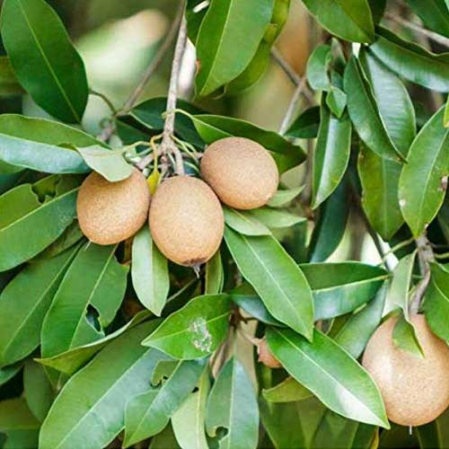

Chikku (Sapodilla)
Botanical Name: Manilkara zapota
Family: Sapotaceae
Native Region: Southern Mexico, Central America
Significance: Sweet fruit rich in fiber and vitamins. Latex used in chewing gum.
Uses: Fresh fruit, milkshakes, traditional medicine.
BREIF ☰